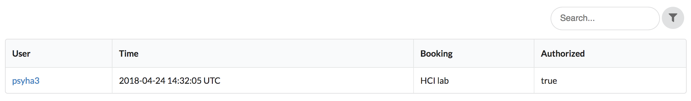
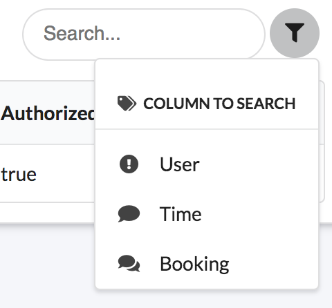

Within the admin dashboard, click the View logs button.
This will direct you to a table of authentication logs, with ability to search and filter.
Click the filter button to see how you can change what you search.
Within the admin dashboard, click the Authentication settings button
This will direct you to a table of authentication settings page.
You can select the way users authenticate with the system
Select which biometric system you'd like to use, and whether you want extra secure double authentication.